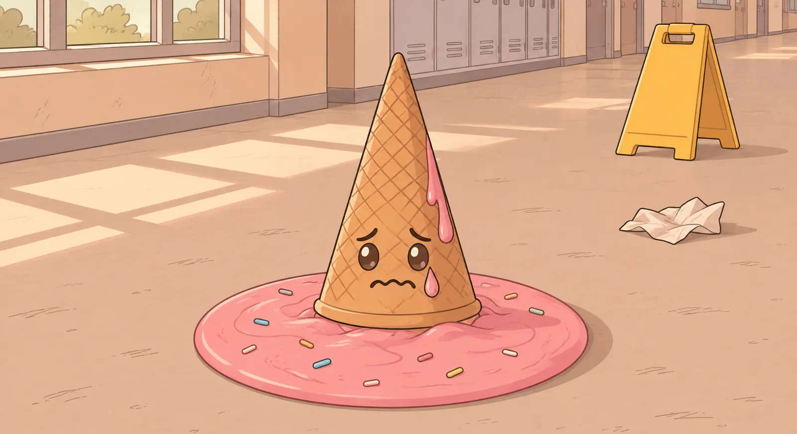

Am I painting it or am I filling it? Surface area, volume, length. 3 different dimensions, 3 different calculations. You can move from one to the other if you're careful.

Circles and cones. Start from what you're given and work towards the rest: from the circumference back to the radius, then on to the area; from a cone's diameter and height to its volume, its slant height and the area of its whole surface.
Every answer to 1 d.p., worked from full accuracy: keep the unrounded value in your calculator until the end.
Level
Stages
Scientific calculator required
8 questions a run, from 12 in each stage at each level. A point for each answer right.